Changes in PRIMAP-hist v2.6.1_final compared to v2.6_final for Namibia
2025-03-19
Johannes Gütschow
Change analysis for Namibia for PRIMAP-hist v2.6.1_final compared to v2.6_final
Overview over emissions by sector and gas
The following figures show the aggregate national total emissions excluding LULUCF AR6GWP100 for the country reported priority scenario. The dotted linesshow the v2.6_final data.
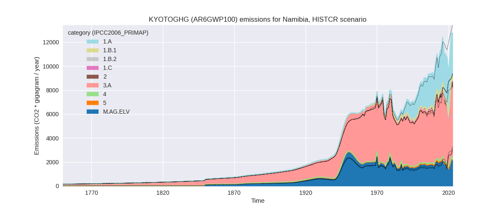
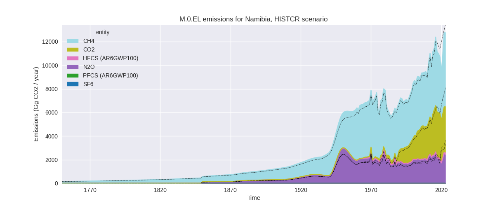
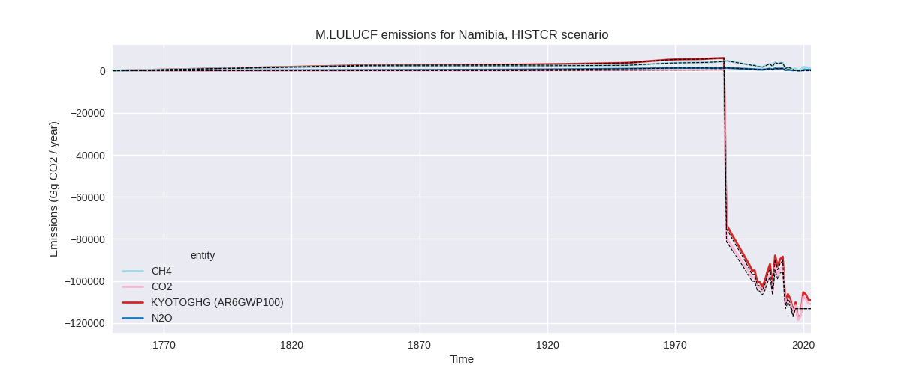
The following figures show the aggregate national total emissions excluding LULUCF AR6GWP100 for the third party priority scenario. The dotted linesshow the v2.6_final data.
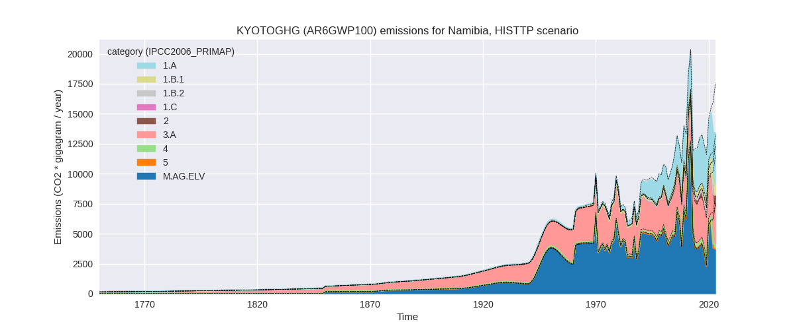
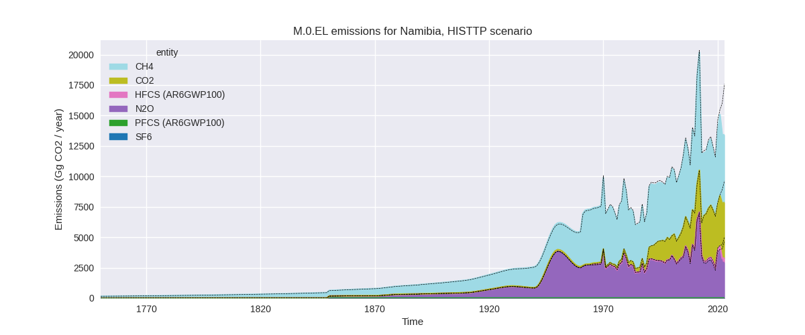
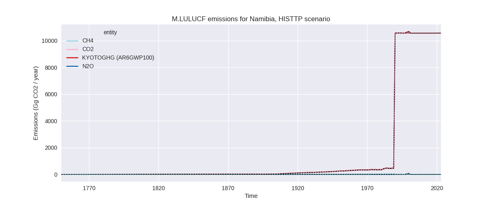
Overview over changes
In the country reported priority scenario we have the following changes for aggregate Kyoto GHG and national total emissions excluding LULUCF (M.0.EL):
- Emissions in 2023 have changed by -5.1%% (-683.85 Gg CO2 / year)
- Emissions in 1990-2023 have changed by -0.1%% (-10.32 Gg CO2 / year)
In the third party priority scenario we have the following changes for aggregate Kyoto GHG and national total emissions excluding LULUCF (M.0.EL):
- Emissions in 2023 have changed by -23.8%% (-4180.17 Gg CO2 / year)
- Emissions in 1990-2023 have changed by -3.2%% (-392.73 Gg CO2 / year)
Most important changes per scenario and time frame
In the country reported priority scenario the following sector-gas combinations have the highest absolute impact on national total KyotoGHG (AR6GWP100) emissions in 2023 (top 5):
- 1: M.AG.ELV, N2O with -891.15 Gg CO2 / year (-29.6%)
- 2: 3.A, CH4 with 594.50 Gg CO2 / year (11.7%)
- 3: 1.A, CO2 with -374.27 Gg CO2 / year (-9.5%)
- 4: 1.B.1, CH4 with 361.88 Gg CO2 / year (inf%)
- 5: 2, CO2 with -159.52 Gg CO2 / year (-30.6%)
In the country reported priority scenario the following sector-gas combinations have the highest absolute impact on national total KyotoGHG (AR6GWP100) emissions in 1990-2023 (top 5):
- 1: 1.B.1, CH4 with 125.59 Gg CO2 / year (inf%)
- 2: M.AG.ELV, N2O with 109.43 Gg CO2 / year (6.7%)
- 3: 3.A, CH4 with -81.25 Gg CO2 / year (-1.8%)
- 4: 1.A, CO2 with -72.60 Gg CO2 / year (-2.9%)
- 5: 2, CO2 with -24.24 Gg CO2 / year (-14.1%)
In the third party priority scenario the following sector-gas combinations have the highest absolute impact on national total KyotoGHG (AR6GWP100) emissions in 2023 (top 5):
- 1: M.AG.ELV, CH4 with -2126.24 Gg CO2 / year (-66.7%)
- 2: M.AG.ELV, N2O with -1751.44 Gg CO2 / year (-40.2%)
- 3: 4, CH4 with -233.05 Gg CO2 / year (-42.4%)
- 4: 3.A, CH4 with -83.99 Gg CO2 / year (-2.5%)
- 5: 2, CO2 with -36.47 Gg CO2 / year (-7.0%)
In the third party priority scenario the following sector-gas combinations have the highest absolute impact on national total KyotoGHG (AR6GWP100) emissions in 1990-2023 (top 5):
- 1: 4, CH4 with -160.18 Gg CO2 / year (-44.4%)
- 2: M.AG.ELV, CH4 with -105.92 Gg CO2 / year (-5.2%)
- 3: M.AG.ELV, N2O with -101.57 Gg CO2 / year (-3.1%)
- 4: 3.A, CH4 with -30.48 Gg CO2 / year (-1.0%)
- 5: 1.B.1, CH4 with 6.23 Gg CO2 / year (1.9%)
Notes on data changes
Here we list notes explaining important emissions changes for the country.
- CRT data from BTR1 covering 1990-2022 has been included. It replaces and extends data from BUR4. The new data leads to changes for several sectors and gases.
- The main 2023 chnages in the TP time-series, CH4 and N2O in M.AG.ELV are both due to a decline in emissions for 2022 in the new FAO data. Further changes come from the new EDGAR data and the new FAO data. Cumulative emissions changes have the same origin.
Changes by sector and gas
For each scenario and time frame the changes are displayed for all individual sectors and all individual gases. In the sector plot we use aggregate Kyoto GHGs in AR6GWP100. In the gas plot we usenational total emissions without LULUCF.
country reported scenario
2023
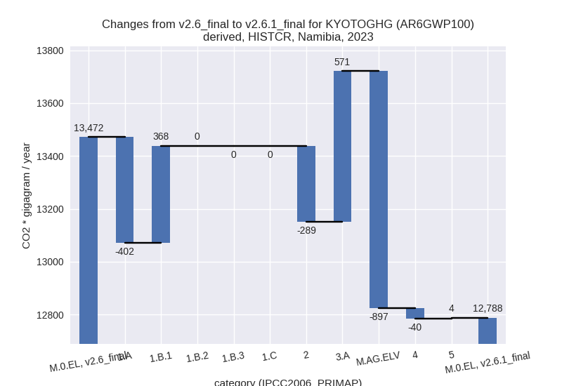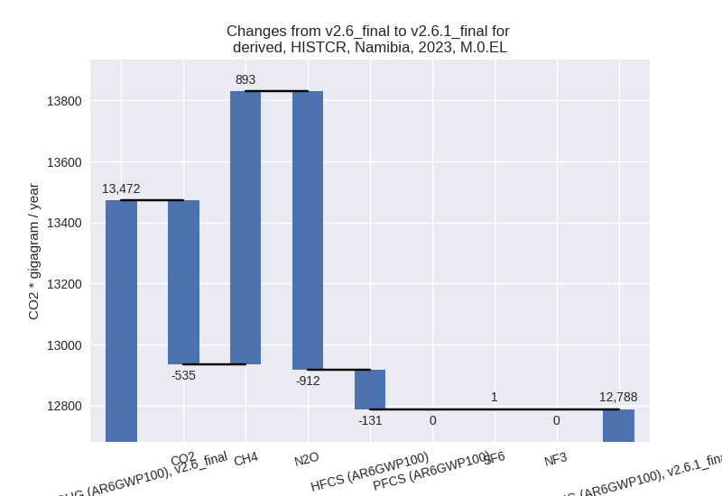
1990-2023
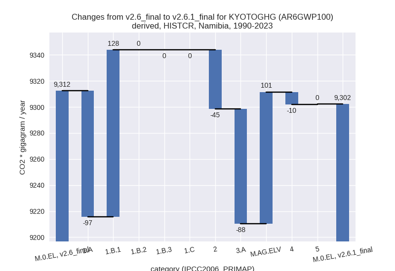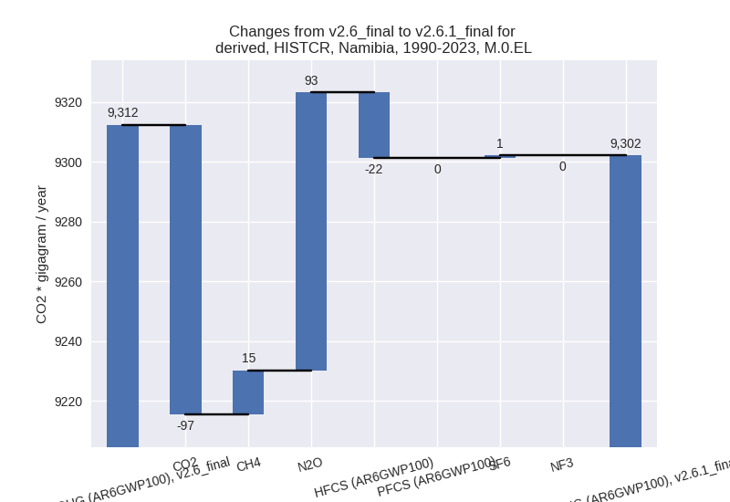
third party scenario
2023
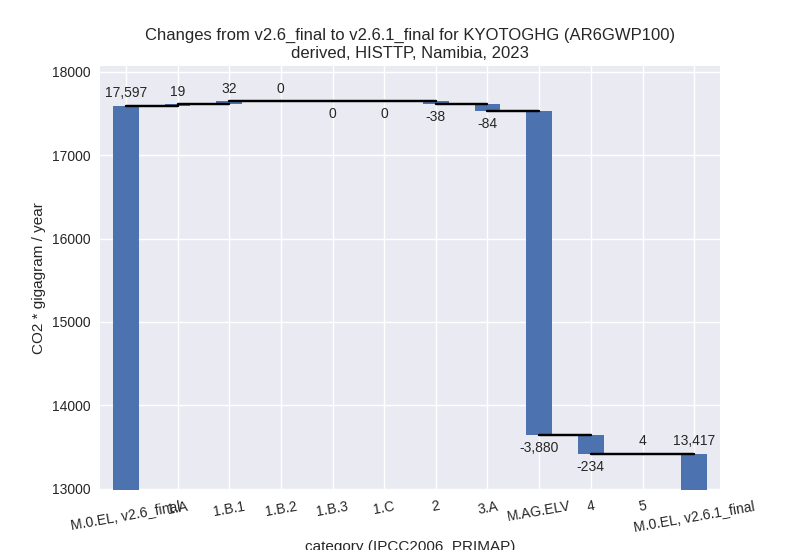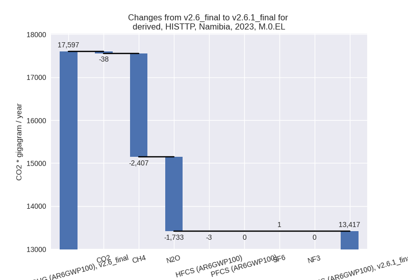
1990-2023
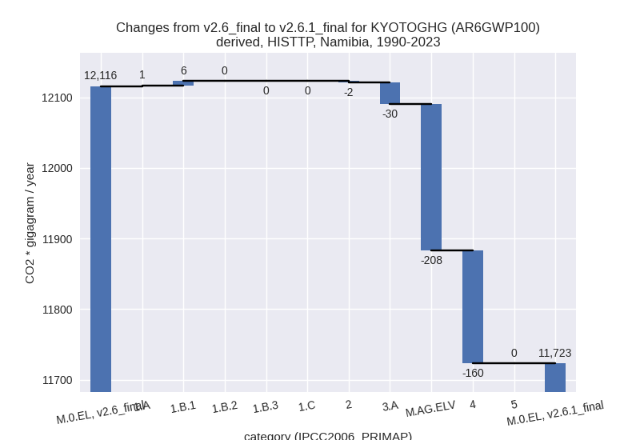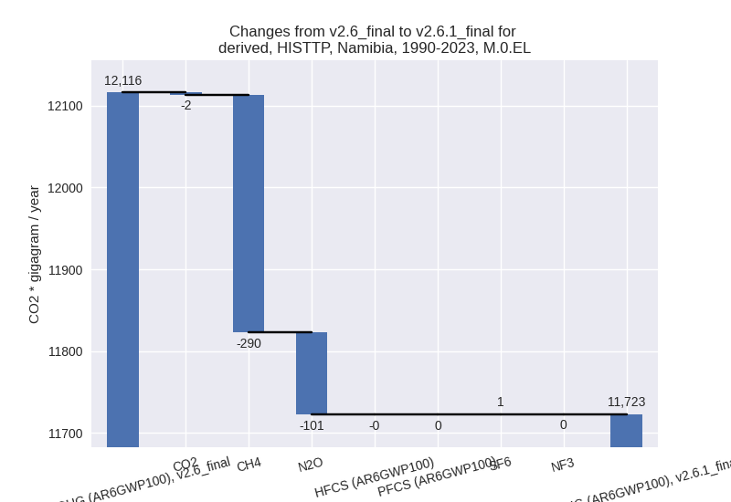
Detailed changes for the scenarios:
country reported scenario (HISTCR):
Most important changes per time frame
For 2023 the following sector-gas combinations have the highest absolute impact on national total KyotoGHG (AR6GWP100) emissions in 2023 (top 5):
- 1: M.AG.ELV, N2O with -891.15 Gg CO2 / year (-29.6%)
- 2: 3.A, CH4 with 594.50 Gg CO2 / year (11.7%)
- 3: 1.A, CO2 with -374.27 Gg CO2 / year (-9.5%)
- 4: 1.B.1, CH4 with 361.88 Gg CO2 / year (inf%)
- 5: 2, CO2 with -159.52 Gg CO2 / year (-30.6%)
For 1990-2023 the following sector-gas combinations have the highest absolute impact on national total KyotoGHG (AR6GWP100) emissions in 1990-2023 (top 5):
- 1: 1.B.1, CH4 with 125.59 Gg CO2 / year (inf%)
- 2: M.AG.ELV, N2O with 109.43 Gg CO2 / year (6.7%)
- 3: 3.A, CH4 with -81.25 Gg CO2 / year (-1.8%)
- 4: 1.A, CO2 with -72.60 Gg CO2 / year (-2.9%)
- 5: 2, CO2 with -24.24 Gg CO2 / year (-14.1%)
Changes in the main sectors for aggregate KyotoGHG (AR6GWP100) are
- 1: Total sectoral emissions in 2022 are 3966.07 Gg CO2 / year which is 31.2% of M.0.EL emissions. 2023 Emissions have changed by -0.8% (-33.16 Gg CO2 / year). 1990-2023 Emissions have changed by 1.2% (31.37 Gg CO2 / year).
- 2: Total sectoral emissions in 2022 are 549.58 Gg
CO2 / year which is 4.3% of M.0.EL emissions. 2023 Emissions have
changed by -33.9% (-288.68 Gg CO2 /
year). 1990-2023 Emissions have changed by -16.0% (-45.35 Gg CO2 / year). For 2023
the changes per gas
are:
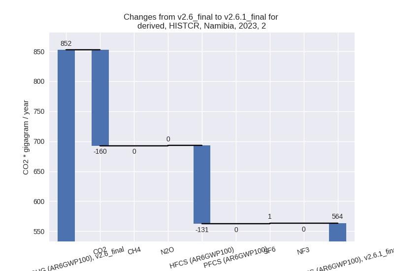
For 1990-2023 the changes per gas are:
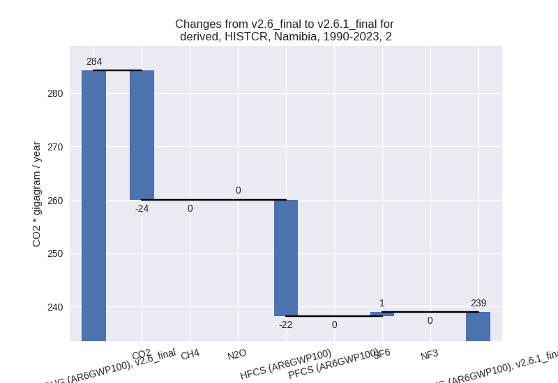 - M.AG: Total sectoral emissions in 2022 are 7942.38
Gg CO2 / year which is 62.4% of M.0.EL emissions. 2023 Emissions have
changed by -4.0% (-325.80 Gg CO2 /
year). 1990-2023 Emissions have changed by 0.2% (13.01 Gg CO2 / year). For 2023 the
changes per gas
are:
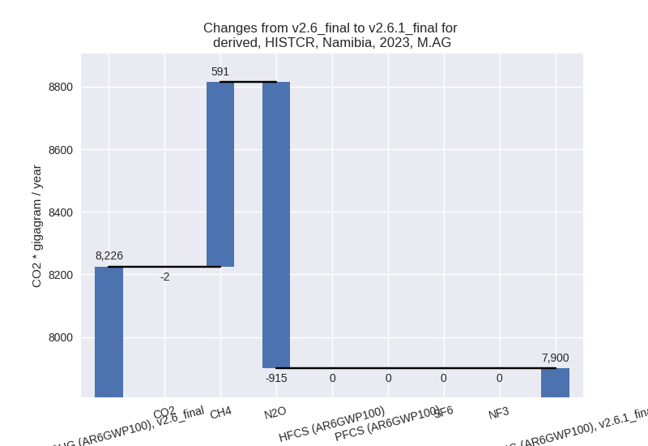
The changes come from the following subsectors:- 3.A: Total sectoral emissions in 2022 are 5806.98
Gg CO2 / year which is 73.1% of category M.AG emissions. 2023 Emissions
have changed by 11.0% (570.89 Gg CO2
/ year). 1990-2023 Emissions have changed by -1.9% (-88.14 Gg CO2 / year). For 2023 the
changes per gas
are:
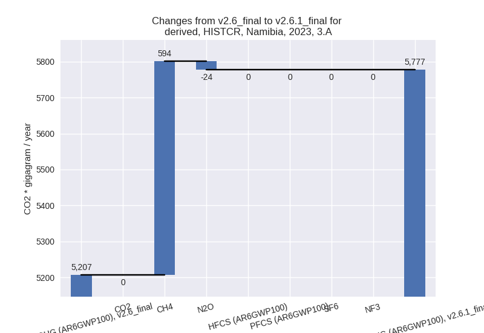
There is no subsector information available in PRIMAP-hist. - M.AG.ELV: Total sectoral emissions in 2022 are
2135.39 Gg CO2 / year which is 26.9% of category M.AG emissions. 2023
Emissions have changed by -29.7%
(-896.70 Gg CO2 / year). 1990-2023 Emissions have changed by 6.1% (101.14 Gg CO2 / year). For 2023 the
changes per gas
are:
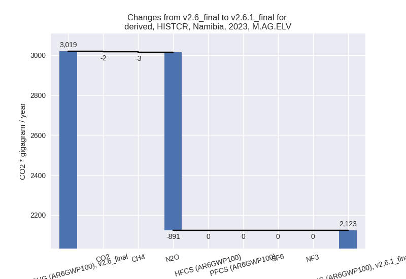
For 1990-2023 the changes per gas are:
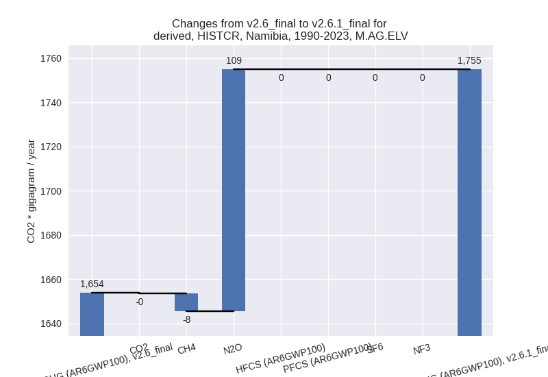
There is no subsector information available in PRIMAP-hist.
- 3.A: Total sectoral emissions in 2022 are 5806.98
Gg CO2 / year which is 73.1% of category M.AG emissions. 2023 Emissions
have changed by 11.0% (570.89 Gg CO2
/ year). 1990-2023 Emissions have changed by -1.9% (-88.14 Gg CO2 / year). For 2023 the
changes per gas
are:
- 4: Total sectoral emissions in 2022 are 203.01 Gg
CO2 / year which is 1.6% of M.0.EL emissions. 2023 Emissions have
changed by -16.3% (-40.47 Gg CO2 /
year). 1990-2023 Emissions have changed by -6.2% (-9.57 Gg CO2 / year). For 2023 the
changes per gas
are:
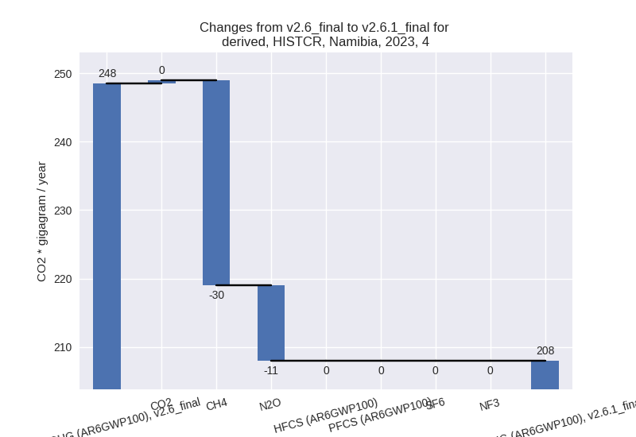
For 1990-2023 the changes per gas are:
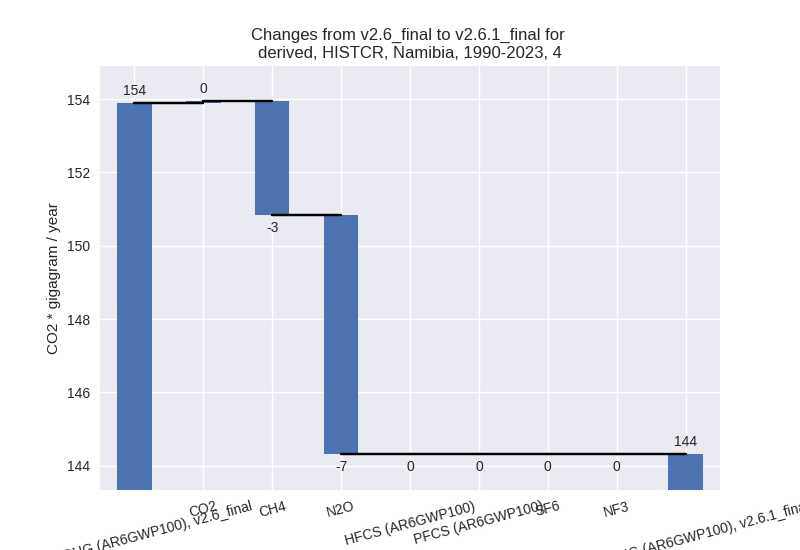 - 5: Total sectoral emissions in 2022 are 70.45 Gg
CO2 / year which is 0.6% of M.0.EL emissions. 2023 Emissions have
changed by 6.3% (4.26 Gg CO2 /
year). 1990-2023 Emissions have changed by 0.5% (0.24 Gg CO2 / year). For 2023 the
changes per gas
are:
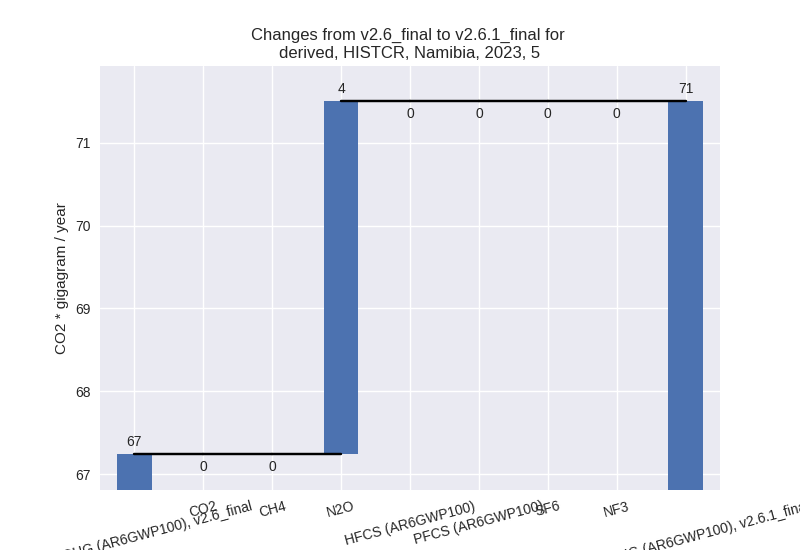
third party scenario (HISTTP):
Most important changes per time frame
For 2023 the following sector-gas combinations have the highest absolute impact on national total KyotoGHG (AR6GWP100) emissions in 2023 (top 5):
- 1: M.AG.ELV, CH4 with -2126.24 Gg CO2 / year (-66.7%)
- 2: M.AG.ELV, N2O with -1751.44 Gg CO2 / year (-40.2%)
- 3: 4, CH4 with -233.05 Gg CO2 / year (-42.4%)
- 4: 3.A, CH4 with -83.99 Gg CO2 / year (-2.5%)
- 5: 2, CO2 with -36.47 Gg CO2 / year (-7.0%)
For 1990-2023 the following sector-gas combinations have the highest absolute impact on national total KyotoGHG (AR6GWP100) emissions in 1990-2023 (top 5):
- 1: 4, CH4 with -160.18 Gg CO2 / year (-44.4%)
- 2: M.AG.ELV, CH4 with -105.92 Gg CO2 / year (-5.2%)
- 3: M.AG.ELV, N2O with -101.57 Gg CO2 / year (-3.1%)
- 4: 3.A, CH4 with -30.48 Gg CO2 / year (-1.0%)
- 5: 1.B.1, CH4 with 6.23 Gg CO2 / year (1.9%)
Changes in the main sectors for aggregate KyotoGHG (AR6GWP100) are
- 1: Total sectoral emissions in 2022 are 5108.22 Gg CO2 / year which is 38.2% of M.0.EL emissions. 2023 Emissions have changed by 1.0% (51.16 Gg CO2 / year). 1990-2023 Emissions have changed by 0.2% (7.18 Gg CO2 / year).
- 2: Total sectoral emissions in 2022 are 842.13 Gg
CO2 / year which is 6.3% of M.0.EL emissions. 2023 Emissions have
changed by -4.2% (-38.03 Gg CO2 /
year). 1990-2023 Emissions have changed by -0.5% (-1.72 Gg CO2 / year). For 2023 the
changes per gas
are:

- M.AG: Total sectoral emissions in 2022 are 7020.56
Gg CO2 / year which is 52.4% of M.0.EL emissions. 2023 Emissions have
changed by -36.4% (-3963.44 Gg CO2 /
year). 1990-2023 Emissions have changed by -2.8% (-238.16 Gg CO2 / year). For 2023
the changes per gas
are:
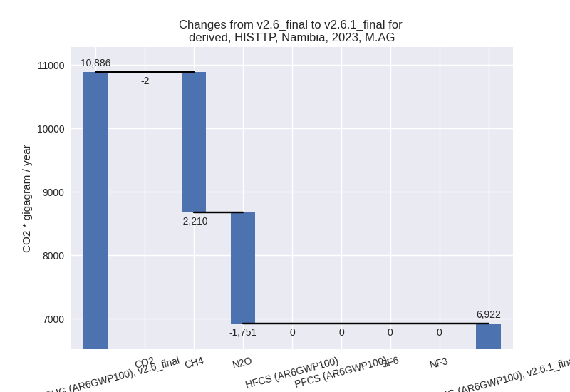
For 1990-2023 the changes per gas are:
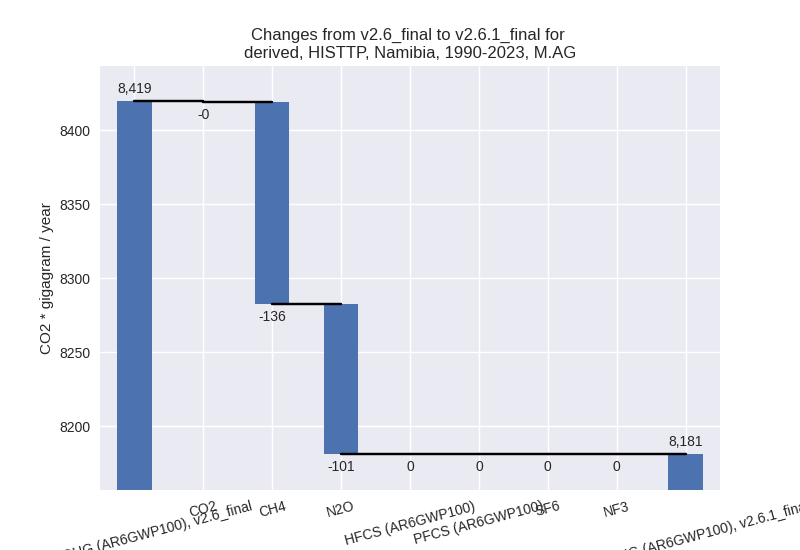
The changes come from the following subsectors:- 3.A: Total sectoral emissions in 2022 are 3270.60
Gg CO2 / year which is 46.6% of category M.AG emissions. 2023 Emissions
have changed by -2.5% (-83.57 Gg CO2
/ year). 1990-2023 Emissions have changed by -1.0% (-30.41 Gg CO2 / year). For 2023 the
changes per gas
are:
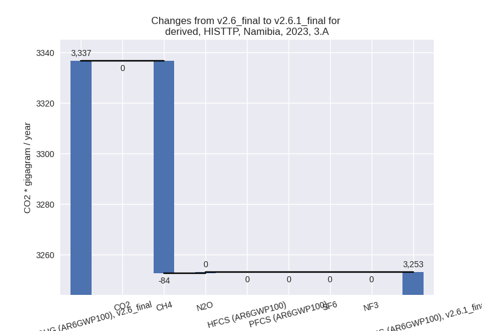
There is no subsector information available in PRIMAP-hist. - M.AG.ELV: Total sectoral emissions in 2022 are
3749.96 Gg CO2 / year which is 53.4% of category M.AG emissions. 2023
Emissions have changed by -51.4%
(-3879.88 Gg CO2 / year). 1990-2023 Emissions have changed by -3.9% (-207.75 Gg CO2 / year). For 2023
the changes per gas
are:
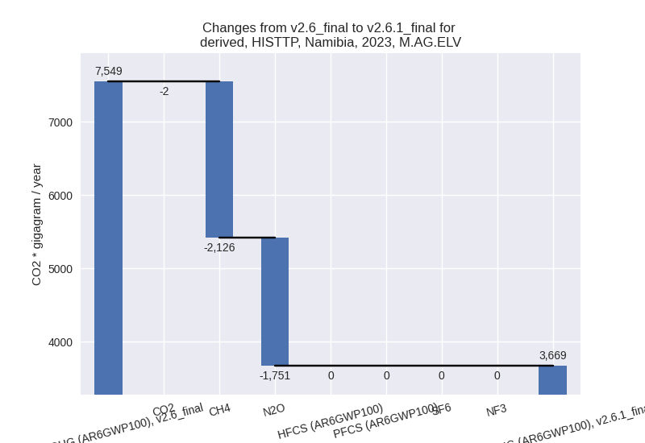
For 1990-2023 the changes per gas are:
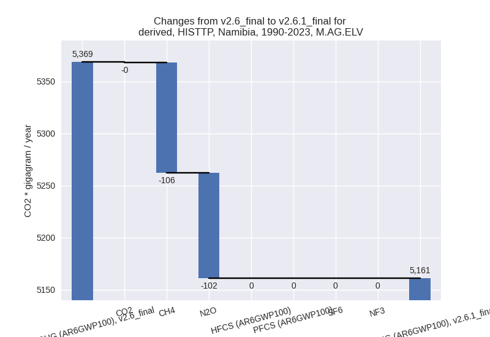
There is no subsector information available in PRIMAP-hist.
- 3.A: Total sectoral emissions in 2022 are 3270.60
Gg CO2 / year which is 46.6% of category M.AG emissions. 2023 Emissions
have changed by -2.5% (-83.57 Gg CO2
/ year). 1990-2023 Emissions have changed by -1.0% (-30.41 Gg CO2 / year). For 2023 the
changes per gas
are:
- 4: Total sectoral emissions in 2022 are 344.78 Gg
CO2 / year which is 2.6% of M.0.EL emissions. 2023 Emissions have
changed by -39.9% (-234.12 Gg CO2 /
year). 1990-2023 Emissions have changed by -41.6% (-160.27 Gg CO2 / year). For 2023
the changes per gas
are:
For 1990-2023 the changes per gas are: - 5: Total sectoral emissions in 2022 are 70.45 Gg
CO2 / year which is 0.5% of M.0.EL emissions. 2023 Emissions have
changed by 6.3% (4.26 Gg CO2 /
year). 1990-2023 Emissions have changed by 0.5% (0.24 Gg CO2 / year). For 2023 the
changes per gas
are: